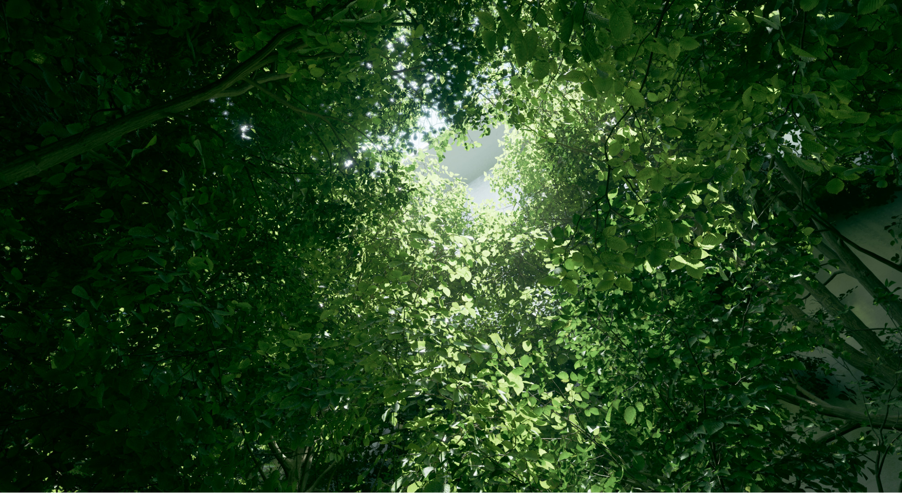

UE5.1 Two Side Foliage材质改进及优化

本文在于项目升级5.1后做的横向测试对比，写做笔记记录下。
改动
Screen probe importance sampling在两侧的树叶上被禁用，因此一半的光线用于收集背面照明Screen traces过背面光线以避免立即自相交。其他跟踪方法使用背面法线进行偏置。- Two Sided Foliage Shading 用
DiffuseLighting * DiffuseColor + BackfaceDiffuseLighting * PreintegratedTwoSidedBxDF * SubsurfaceColor r.Lumen.ScreenProbeGather.TwoSidedFoliageBackfaceDiffuse关闭后会将次表面的颜色加到DiffuseColor(没有backface lighting)The High GI scalability level disables TwoSidedFoliageBackfaceDiffuse to avoid overhead
代码
1 | // DiffuseIndirectComposite.usf |
总结
- UE 在5.1中对two side foliage类型的材质进行背部次表面散射补偿。通过叠加次表面散射的颜色与间接光的乘积得到背部补偿。但会增加16mb的RT来累积光照
- 可用点乘的方式在低版本的植被上添加自发光实现补偿trick效果。


参考
https://github.com/EpicGames/UnrealEngine/commit/3ecab7b620fe7c74c0427f5dc24cc32528eba301